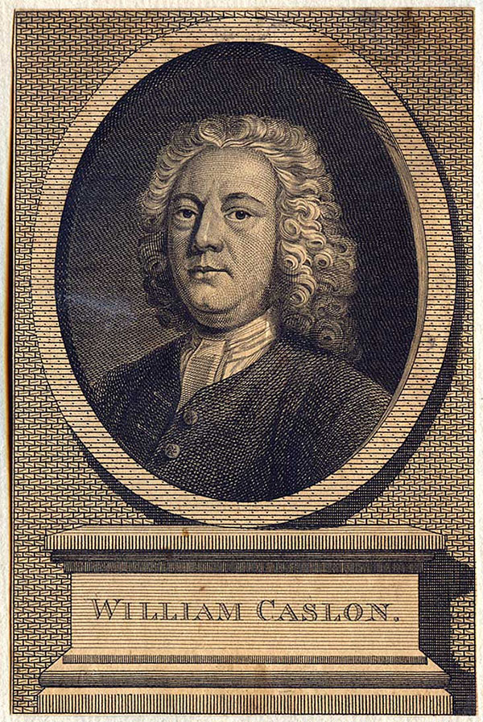
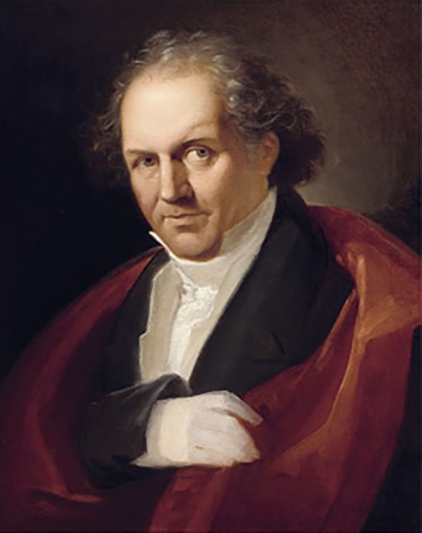

Nicholas Jenson (1420 – 1480) was a French engraver, pioneer, printer and type designer who carried out most of his work in Venice, Italy. Jenson acted as Master of the French Royal Mint at Tours, and is credited with being the creator of one of the finest early Roman typefaces.
Nicholas Jenson has been something of an iconic figure among students of early printing since the 19th century, when the aesthete William Morris praised the beauty and perfection of his Roman font. Jenson is an important figure in the early history of printing and a pivotal force in the emergence of Venice as one of the first great centres of the printing press.
Claude Garamont (1510 – 1561), known commonly as Claude Garamond, was a French type designer, publisher and punchcutter based in Paris. Garamond worked as an engraver of punches, the masters used to stamp matrices, the moulds used to cast metal type. He worked in the tradition of what is now called old-style serif letter design, that produced letters with a relatively organic structure resembling handwriting with a pen but with a slightly more structured and upright design.
Garamond is now considered one of the leading type designers of all time. He is recognised to this day for the elegance of his typefaces.

William Caslon I (1692 – 1766), also known as William Caslon the Elder, was an English gunsmith and designer of typefaces. The distinction and legibility of his type secured him the patronage of the leading printers of the day in England and the continent. His typefaces transformed English type design and first established an English national typographic style.
Caslon was born in Cradley, Worcestershire in 1692 and trained as an engraver in nearby Birmingham. In 1716, he started business in London as an engraver of gun locks and barrels and as a bookbinder's tool cutter. Having contact with printers, he was induced to fit up a type foundry, largely through the encouragement of William Bowyer.
“’Legibility’ is based on the ease with which one letter can be told from the other. ‘Readability’ is the ease with which the eye can absorb the message and move along the line.” —Types of Typefaces (1967)
Giambattista Bodoni (1740 – 1813) was an Italian typographer, type designer, compositor, printer and publisher in Parma. He first took the type designs of Pierre Simon Fournier as his exemplars, but afterwards became an admirer of the more modelled types of John Baskerville; and he and Firmin Didot evolved a style of type called 'New Face', in which the letters are cut in such a way as to produce a strong contrast between the thick and thin parts of their body.
Bodoni designed many typefaces, each one in a large range of sizes. He is even more admired as a compositor, as the large range of sizes which he cut enabled him to compose his pages with the greatest possible subtlety of spacing. Like Baskerville, he set off his texts with wide margins and used little or no decoration.

Giambattista Bodoni (1740 – 1813) was an Italian typographer, type designer, compositor, printer and publisher in Parma. He first took the type designs of Pierre Simon Fournier as his exemplars, but afterwards became an admirer of the more modelled types of John Baskerville; and he and Firmin Didot evolved a style of type called 'New Face', in which the letters are cut in such a way as to produce a strong contrast between the thick and thin parts of their body.
Bodoni designed many typefaces, each one in a large range of sizes. He is even more admired as a compositor, as the large range of sizes which he cut enabled him to compose his pages with the greatest possible subtlety of spacing. Like Baskerville, he set off his texts with wide margins and used little or no decoration.
| Name: | Typeface | Foundry |
|---|---|---|
| Nicolas Jenson | Adobe Jenson | Adobe |
| Jenson Classico | omnibus typogrfi | |
| LTC Jenson | Lanston Type | |
| Claude Garamont | Berthold Garamont | Berthold |
| Simoncini Garamond | Linotype | |
| Adobe Garmond | Adobe | |
| William Caslon | Caslon 540 | Bitstream |
| ITC Founders Caslon | ITC Libary | |
| Adobe Caslon | Adobe | |
| John Baskerville | Baskerville | Monotype |
| Baskerville Old face | Scangraphic | |
| Baskerville No.2 | Bitstream | |
| Giambattista Bodoni | Bodoni | Adobe |
| Bauer Bodoni | Linotype | |
| Bodoni Classic | Wiescher Design |